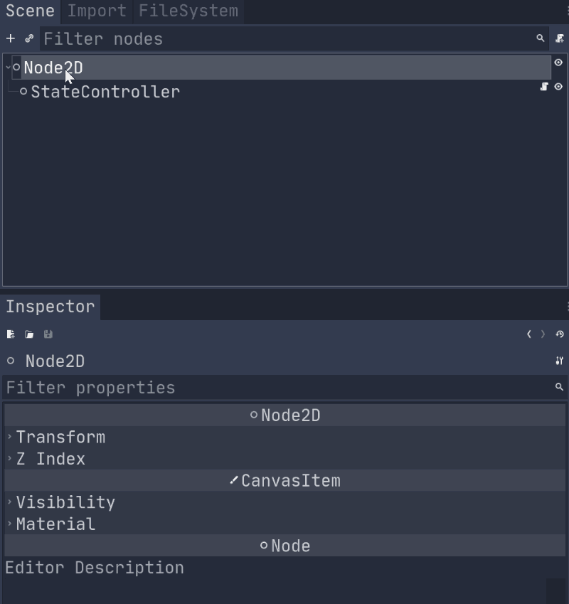
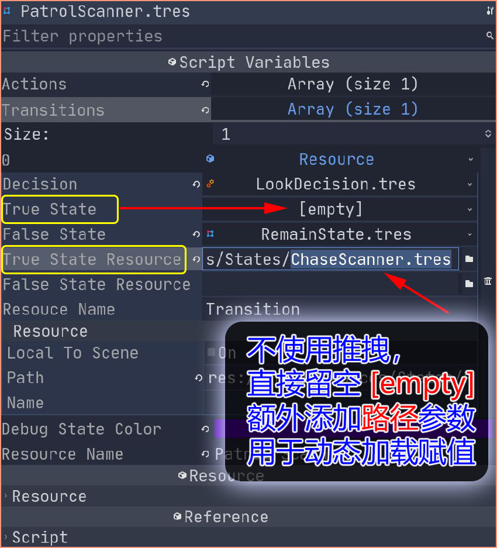
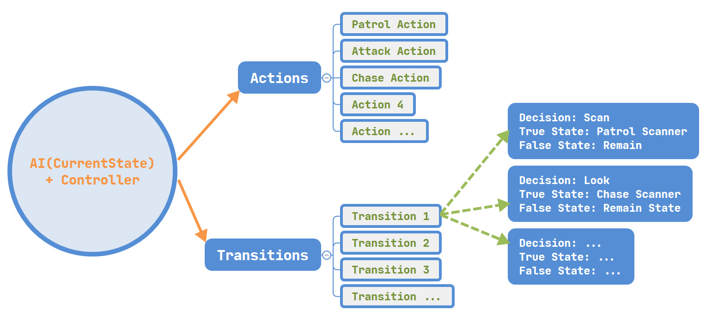
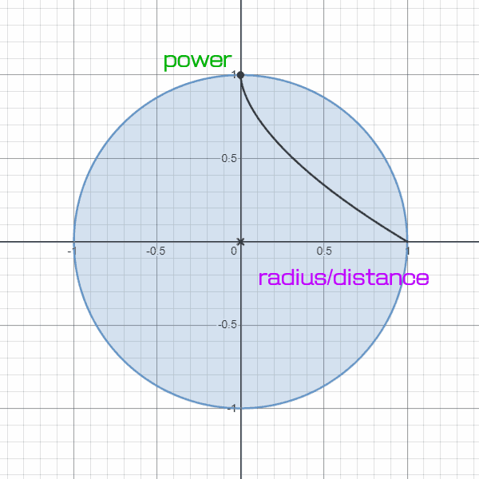
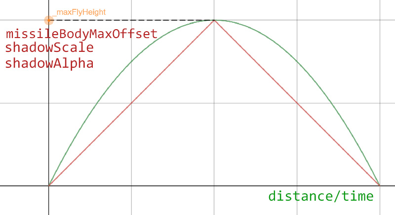

Godot游戏开发实践之四：搬运Unity的Pluggable AI教程
一、前言 在之前的几篇文章里我简单地介绍了 AI 寻路方式以及 Resource 的相关应用，那其实都是为这篇文章做铺垫的，本篇的内容是基于油管上一个比较老的 Unity AI 系列教程： Unity tutorial: Pluggable AI With Scriptable Objects ，教程详细介绍了 Unity 中如何实现可插拨式 AI 的功能，在我的一番苦苦研究下，硬生生地把它给搬运到了 Godot 中，搬运过程可谓是费了九牛二虎之力，这其中一部分原因是由于自己对 Godot API 的熟练程度不够，另一方面则是 Godot 本身的一些缺陷，这些我都会在本文中提出来。

因为 Unity 中的 ScriptObject 在 Godot 中相当于 Resource ，如果不是很熟悉，推荐大家阅读我的上一篇文章： Godot游戏开发实践之三：容易被忽视的Resource 。另外，搬用并等于照抄，本 Demo 实现的部分 AI 功能使用的是我自己的方式，这也在我之前的文章里有详细介绍： Godot游戏开发实践之二：AI之寻路新方式 。
说明 ：我不会很详细的讲述如何实现某些特定功能，所以推荐大家观看原 Unity 视频，如果上油管不方便，也请放心，视频教程我已经搬运到我的网盘，分享链接请关注我的公众号，回复 AI教程 即可（友情提示：套路……），哈哈。
主要内容： 无http://liuqingwen.me/2020/09/08/godot-game-devLog-4-translate-pluggable-AI-tutorial-from-unity-to-godot/ http://liuqingwen.me/introduction-of-godot-series/
二、正文 除了参考原视频教程，也可以克隆本 Demo 的源码，我已经上传到 Github ，供有兴趣的同学参考。
什么是可插拨AI 所谓可插拨 其实和安装插件、热插拨等概念类似，就是可以随意添加或者删除某个功能，通过直接拖拽就能组成复杂的 AI 体系而无须手动重复编写代码，在 Unity 中使用的是 ScriptableObject 而 Godot 中即 Resource ：

其实在编辑器方面， Unity 使用起来比 Godot 舒服多了。
先说Godot的问题 搬运这个 AI 教程的时候，我反反复复、仔仔细细研究了很多次，在按步照搬的过程中出现了一个非常奇怪且头疼的问题：游戏无症状、无征兆地闪退 ！
代码看上去没问题，按下 F5 运行游戏，窗口还没显示就马上停止运行，连错误提示都没有。曾经因为这个错误我一度想着放弃算了，但是转念一想， Godot 开发者岂能低头？！ 所以我继续尝试，寻找错误原因，探索可行的解决方案，从至少能正常运行开始一步一步添加相关功能，最终发现了闪退的罪魁祸首： Circular reference to resource 即循环引用 报错，这在我之前的文章中已经聊过，也有朋友遇到过类似的问题，错误信息大概是：
“scene/resources/resource_format_text.cpp:1387 - Circular reference to resource being saved found: ‘res://src/Resources/States/???.tres’ will be null next time it’s loaded.”
哪来的循环引用呢？熟悉游戏结构你就会感觉到这是很显然的：在我的游戏中有很多 Resource 资源类，比如 Action/Decision/State/Transitions 等，而这些资源相互之间或多或少发生了一些引用，就像 PatrolChaser 中引用了 ChaseChaser ，反过来 ChaseChaser 又引用 PatrolChaser 从而造成循环引用链，甚至还有更加复杂的、难以发觉的、千丝万缕的引用关系蕴含其中：
Alert Scanner -> Patrol Scanner -> Chase Scanner -> Alert Scanner -> Chase Scanner -> Alert Scanner -> …
在编程语言里这些引用再正常不过，但是 Godot 3 还不能正常处理循环引用，这会在 4.0 中进行修复，我可不想等到明年春天了，最终解决方式是放弃部分插拨功能，对一些参数不采用推拽赋值 的方式，取而代之的是在运行时判断对应资源是否为 null 再决定动态加载进行赋值，这就造成了需要额外的一个变量用来指向对应 Resource 文件的路径：

主要代码如下：
1 2 3 4 5 6 7 8 9 10 11 12 13 14 15 16 17 func _checkTransitions(controller : StateController) -> void: for transition in transitions: var decisionSucceeded : bool = transition.decision.decide(controller) if decisionSucceeded: var trueState = transition.trueState if trueState == null: trueState = load(transition.trueStateResource) transition.trueState = trueState controller.transitionToState(trueState) else : var falseState = transition.falseState if falseState == null: falseState = load(transition.falseStateResource) transition.falseState = falseState controller.transitionToState(falseState)
除此之外，还有一个不忍直视的问题是在编辑器中显示资源值的视图，一旦涉及多个参数、多种类型、多个级别的资源混合在一起，那么他们之间的层级关系在属性面板中变得极其难以辨别，感同身受一下这张慢动图所带来的崩溃心情吧：
嗯，此刻的我心中万马奔腾，无限次奔溃闪退并自动重启中……
AI结构分析 如果你看完了整个视频教程，你会发现这个 AI 系统的几个重要部件：
Action 表示动作，比如巡逻、射击等动作的控制实现
Decision 表示策略行为的决定，即状态之间进行切换的依据
State 表示状态，一个状态即一种 AI 行为，不同状态之间根据决定进行切换
Transition 包装了两个状态（正反状态），以及状态发生转换的决定
他们之间的关系图，以及主要的行为类：

Action 父类代码：
AbstractAction.gd 1 2 3 4 5 6 7 8 9 extends Resource class_name AbstractAction, 'res://assets/icons/action-icon.svg' export var debugDrawColor := Color.black export var resourceName := 'Action' func act(controller : StateController) -> void: pass
Decision 父类代码：
AbstractDecision.gd 1 2 3 4 5 6 7 8 9 10 extends Resource class_name AbstractDecision, 'res://assets/icons/decision-icon.svg' export var debugDrawColor := Color.white export var resourceName := 'Decision' func decide(controller : StateController) -> bool: return false
State 状态类代码：
State.gd 1 2 3 4 5 6 7 8 9 10 11 12 13 14 15 16 17 18 19 20 21 extends Resource class_name State, 'res://assets/icons/state-icon.svg' export(Array, Resource) var actions = [] export(Array, Resource) var transitions = [] export var debugStateColor := Color.green func updateState(controller : StateController) -> void: _doActions(controller) _checkTransitions(controller) func _doActions(controller : StateController) -> void: for action in actions: action.act(controller) func _checkTransitions(controller : StateController) -> void:
控制器 Controller 和过渡机制 Transition 的代码就不贴了，控制器中代码都是一些基本状态和控制操作的实现。这里我把视频中介绍的所有 AI 类型例举如下：
1 2 3 4 5 6 7 8 9 10 11 12 13 14 15 16 17 18 19 20 Chase Chaser: { Actions: [ChaseAction, AttackAction], Transitions: {Decision: ActiveStateDecision, TrueState: Remain State, FalseState: Patrol Chaser} } Patrol Chaser: { Actions: [PatrolAction], Transitions: {Decision: LookDecision, TrueState: Chase Chaser, FalseState: Remain State} } Chase Scanner: { Actions: [ChaseAction, AttackAction], Transitions: {Decision: LookDecision, TrueState: Remain State, FalseState: Alert Scanner} } Patrol Scanner: { Actions: [PatrolAction], Transitions: {Decision: LookDecision, TrueState: Chase Scanner, FalseState: Remain State} } Alert Scanner: { Actions: [], Transitions: [{Decision: ScanDecision, TrueState: Patrol Scanner, FalseState: Remain State}, {Decision: LookDecision, TrueState: Chase Scanner, FalseState: Remain State}] }
当然，这个 AI 系统绝不局限于此，你完全可以组合出更多 AI 状态，也可以添加你心目中所要实现的其他动作、决定、过渡和状态类，丰富这个强大的 AI 系统。
其他小功能简介 最后，游戏中使用的一些小技巧我也在本篇中简单介绍一下，包括：炸弹的范围伤害、相机自动跟踪、子弹高度模拟等。
炸弹范围伤害 
从图中可以看出，我使用了指数级的衰减函数，也就是说距离炸弹爆炸中心越远，伤害衰减的越厉害，个人认为要符合现实一些，当然你完全可以使用简单的线性函数，伤害和距离成反比，这取决于你自己以及游戏机制的设计：
MissileExplosion.gd 1 2 3 4 5 6 7 8 9 10 11 12 onready var damageRange : float = $CollisionShape2D.shape.radius func _on_Explosion_body_entered(body: Node) -> void: if body.has_method('damaged' ): var vector : Vector2 = body.global_position - self.global_position var ratio : float = 1.0 - pow(vector.length() / damageRange, 0.6 ) var damage := ceil(maxDamage * ratio) var force : Vector2 = maxForce * ratio * vector.normalized() body.damaged(damage, force)
相机自动跟踪 在本示例中我使用了相机自动跟踪的效果。
因为类似于多人游戏，使用相机进行跟踪是有必要的，这样可以保证所有的坦克、玩家都在当前视野中。实现起来不难，根据当前玩家数量以及玩家的位置计算最大边距以及中心点，然后移动并设置相机的缩放即可：
Camera.gd 1 2 3 4 5 6 7 8 9 10 11 12 13 14 15 16 17 18 19 20 21 22 23 24 25 26 27 28 29 30 onready var _windowSize := self.get_viewport_rect().size var targets := [] func _process(delta: float) -> void: if targets.size() <= 1 : _camera.zoom = lerp(_camera.zoom, Vector2.ONE, 2.0 * delta) return var minPos := _windowSize var maxPos := Vector2.ZERO for target in targets: if ! is_instance_valid(target): continue if target.global_position.x < minPos.x: minPos.x = target.global_position.x if target.global_position.x > maxPos.x: maxPos.x = target.global_position.x if target.global_position.y < minPos.y: minPos.y = target.global_position.y if target.global_position.y > maxPos.y: maxPos.y = target.global_position.y self.global_position = lerp(self.global_position, (maxPos + minPos) / 2 , 2.0 * delta) var zoom = 2.0 * max((maxPos.x - minPos.x) / _windowSize.x, (maxPos.y - minPos.y) / _windowSize.y) zoom = clamp(zoom, 0.5 , 1.0 ) _camera.zoom = lerp(_camera.zoom, Vector2.ONE * zoom, 2.0 * delta)
子弹高度模拟 原 Unity 视频中的 Tank 是一个 3D 游戏，所以子弹也就有射程（落地）和高度之分，如果在 2D 场景中不设置高度，炸弹只要碰上其他炸弹或者静态物体都会直接爆炸，那么游戏中的发射力（射程）也就毫无意义了，所以我使用代码简单地实现了子弹高度的模拟。

思路大概是这样的：给子弹添加一个阴影，阴影大小和透明度随子弹高度发生变化，飞行中的子弹在垂直方向上偏移一定位置表示高度，最后把碰撞体设置在阴影上。这里的变化都使用了线性比例，实现方式也相对简单，从上图也可以看出来：
Missile.gd 1 2 3 4 5 6 7 8 9 10 11 12 13 14 15 16 17 18 19 20 21 22 23 24 25 26 27 28 29 30 31 32 33 34 35 36 37 38 39 40 41 42 43 44 export var missileBodyMaxOffset := 60.0 export(float, 1.0 , 10.0 ) var shadowMaxScale := 1.5 export(float, 0.0 , 1.0 ) var shadowMinScale := 0.5 export(float, 0.0 , 1.0 ) var shadowMinAlpha := 0.25 export(float, 1.0 , 2.0 ) var shadowMaxAlpha := 2.5 func init(force : float, maxSpeed : int, resistance : int, dir : Vector2) -> void: _direction = dir _fullSpeed = maxSpeed _moveResistance = resistance _maxFlyHeight = 0.5 * maxSpeed * maxSpeed / resistance _paramScaleA = (shadowMinScale - shadowMaxScale) / _maxFlyHeight _paramScaleB = shadowMaxScale _paramAlphaA = (shadowMaxAlpha - shadowMinAlpha) / (shadowMinScale - shadowMaxScale) _paramAlphaB = shadowMaxAlpha - shadowMinScale * _paramAlphaA var angle = fmod(dir.angle(), 2 * PI) if angle > PI * 0.5 || angle < - PI * 0.5 : missileBodyMaxOffset = -missileBodyMaxOffset _velocityX = force * maxSpeed _velocityY = force * maxSpeed func _physics_process(delta: float) -> void: self.position += _direction * _velocityX * delta _velocityY -= _moveResistance * delta currentHeight += _velocityY * delta _adjustHeight(currentHeight) if currentHeight <= 0.0 : explode() func _adjustHeight(height : float) -> void: _body.position.y = - height / _maxFlyHeight * missileBodyMaxOffset var shadowScale = _paramScaleA * height + _paramScaleB _shadow.scale = Vector2.ONE * shadowScale var shadowAlpha = _paramAlphaA * shadowScale + _paramAlphaB _shadow.modulate.a = shadowAlpha
嗯，我就想弱弱问一句：现实生活中物体越高其阴影是越大还是越小呢？……
三、总结 这种 AI 系统具有比较强的扩展性和易用性，有点复杂问题简单模块化的思维，用起来应该会相当爽，当然我也没有具体项目案例，另外也有一些不足之，个人经验主要概括为这两点：
Pluggable AI 确实比较强大，使用非常方便，因为是可插拨，即使配置复杂的 AI 都只要轻轻一拖一拽一松手 就完成了
但是这种方式也有令人不爽的地方，比如耦合还是比较厉害的，代码中需要访问、修改很多玩家相关数据，依然需要一番精心的设计
好在 Unity 中具有更加成熟的碰撞检测相关 API ，比如 SphereCast 还有 Navigator 都是极好用的 AI 辅助工具， Godot 中就只能手动实现了。
这是之前录制的视频，已经更新部分功能，可以到 Github 查看。
最后，务必关注我的公众号，回复 AI教程 我会送上本套视频以及非常棒的一套 AStar 讲解视频（毫无疑问也是在 Unity 中实现，但是原理通用）。本篇的 Demo 以及相关代码已经上传到 Github ，地址： https://github.com/spkingr/Godot-Pluggable-AI ， 后续继续更新，原创不易 ，希望大家喜欢！
我的博客地址： http://liuqingwen.me ，我的博客即将同步至腾讯云+社区，邀请大家一同入驻： https://cloud.tencent.com/developer/support-plan?invite_code=3sg12o13bvwgc ，欢迎关注我的微信公众号（第一时间更新+游戏开发资源+相关资讯）：
Comments: